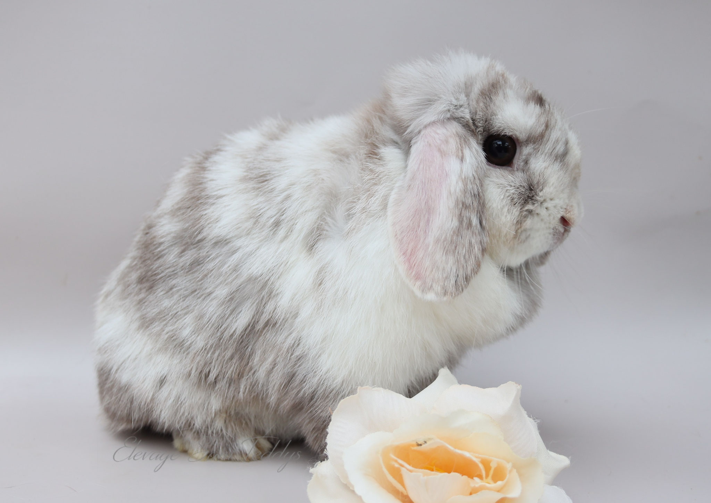
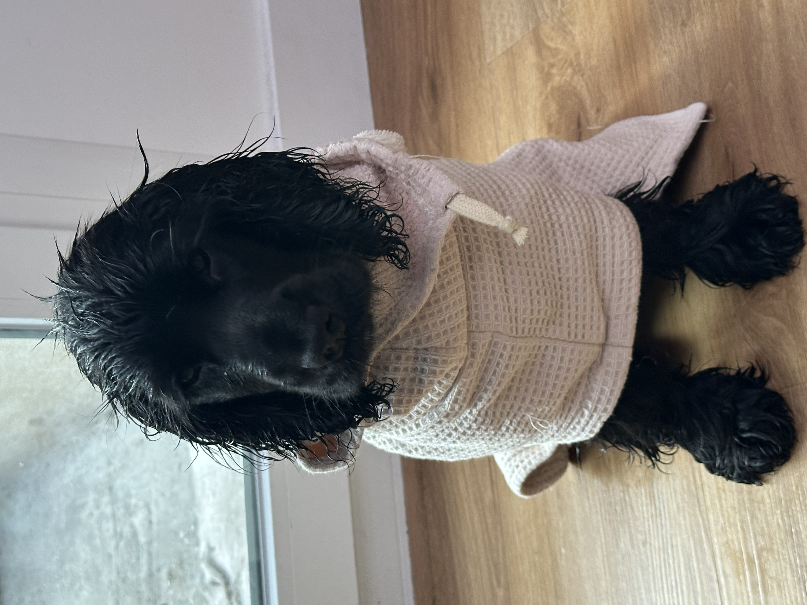

-Formation Assistance Design Graphique-
Coordonnées
24 ans
258 rue Dolain, 62100 Calais
06.26.35.59.88
elodiee879@gmail.com
Permis B + Véhicule
Expériences professionnelles
Fleuriste Calais- Marck - 2021/2022
Stages - Soraya Flor et Au Bouquet Parfumé
- Créations de bouquets et compositions
- Entretien florale
Mode Calais-Marck- 2018/2019
Stages d’études - Hurtrel Sarl, Pressing Jacquard et Repass’Retouches
- Entretien de la dentelle
- Couture
- Repassage
- Créations
Savoirs-Etre
- Créatif
- A l’écoute
- Sens de l’esthétique
- Bon relationnel
- Esprit d’analyse et d’observation
Savoirs-Faire
- Réaliser des supports visuels
- Utilisation de base de logiciels de création graphique
- Utilisation des outils informatiques et bureautiques

